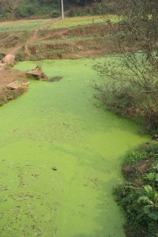

Σήμερα, πολλά οικοσυστήματα γλυκού νερού στον κόσμο (π.χ. λίμνες) υποφέρουν από ένα πρόβλημα που είναι γνωστό ως ευτροφισμός. Ο ευτροφισμός ορίζεται ως η αύξηση στα επίπεδα των θρεπτικών συστατικών σε ένα υδάτινο οικοσύστημα. Ο ευτροφισμός συχνά προκαλείται από την ανθρώπινη οικιακή ή γεωργική δραστηριότητα. Ως αποτέλεσμα της αύξησης στη συγκέντρωση των θρεπτικών συστατικών, ο αριθμός συγκεκριμένων ειδών πρωτογενών παραγωγών (κυρίως φύκια και κυανοβακτήρια) αυξάνεται αισθητά. Ωστόσο, η επιτυχία αυτού του μικρού αριθμού ειδών ταχείας ανάπτυξης έχει σοβαρές συνέπειες σε άλλους αβιοτικούς παράγοντες, όπως η διαύγεια του νερού (ο ευτροφισμός συνήθως μειώνει την ποσότητα της ηλιακής ακτινοβολίας που φτάνει στα κατώτατα στρώματα του νερού) και τη διαθεσιμότητα του οξυγόνου (κατά τη διάρκεια της νύκτας όλα τα φυτά χρησιμοποιούν οξυγόνο). Έτσι, ενώ μερικά φύκια ευδοκιμούν, άλλα είδη φυτών, ζωοπλαγκτόν και ψαριών υποφέρουν τις συνέπειες.Οι επιπτώσεις του ευτροφισμού μπορεί να είναι έντονες και μπορούν να οδηγήσουν μέχρι και σε μείωση στην ποικιλότητα των ειδών, μείωση στη διαύγεια του νερού και στην αύξηση των φυκιών (ραγδαία ανάπτυξη ενός ενδεχομένως τοξικού είδους φυκιού ή κυανοβακτηρίου).

Η ανάπτυξη φυκιών σε ένα μικρό ποτάμι στην Κίνα. πηγή: Wikipedia / Felix Andrews